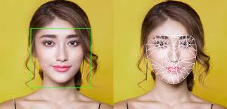
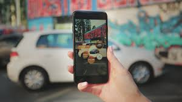
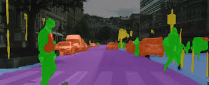
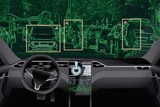
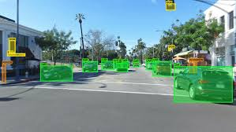
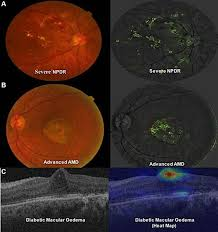

• Facial recognition

Facial recognition technology is used to match photos of people’s faces to their identities. technology is
integrated into major products that we use every day.
example, Face book is using computer vision to identify
people in photos.
Facial recognition is a crucial technology for biometric authentication. Many mobile devices available on the
market today allow users to unlock devices by showing their faces. A front face camera is used for facial
recognition; mobile devices process this image and, based on analysis, can tell whether the person who is holding
a device is authorized on this device. The beauty of this technology is that it works really fast.
• Augmented reality

Computer vision is a core element of augmented reality apps. This technology helps AR apps to detect physical
objects (both surfaces and individual objects within a given physical space) in real-time and use this information
to place virtual objects within the physical environment. The Ikeas Place app uses AR to help users understand
whether the furniture they want to buy will fit into their interior.
• Self-driving cars



Computer vision enables cars to make sense of their surroundings. A smart vehicle has a few cameras that capture
videos from different angles and send videos as an input signal to the computer vision software. The system
processes the video in real-time and detects objects like road marking, objects near the car (such as pedestrians
or other cars), traffic lights, etc. One of the most notable examples of applications of this technology is
autopilot in Tesla cars.
• Health

Image information is a key element for diagnosis in medicine because it accounts for 90 percent of all medical
data. Many diagnoses in health are based on image processing—X-rays, MRI, and mammography, just to name a few. And
image segmentation proved its effectiveness during medical scans analysis. For example, computer vision algorithms
can detect diabetic retinopathy, the fastest-growing cause of blindness. Computer vision can process pictures of
the back of the eye (see below) and rate them for disease presence and severity. Computer vision algorithms can be
used to process retinal funds photographs to screen for diabetic retinopathy.